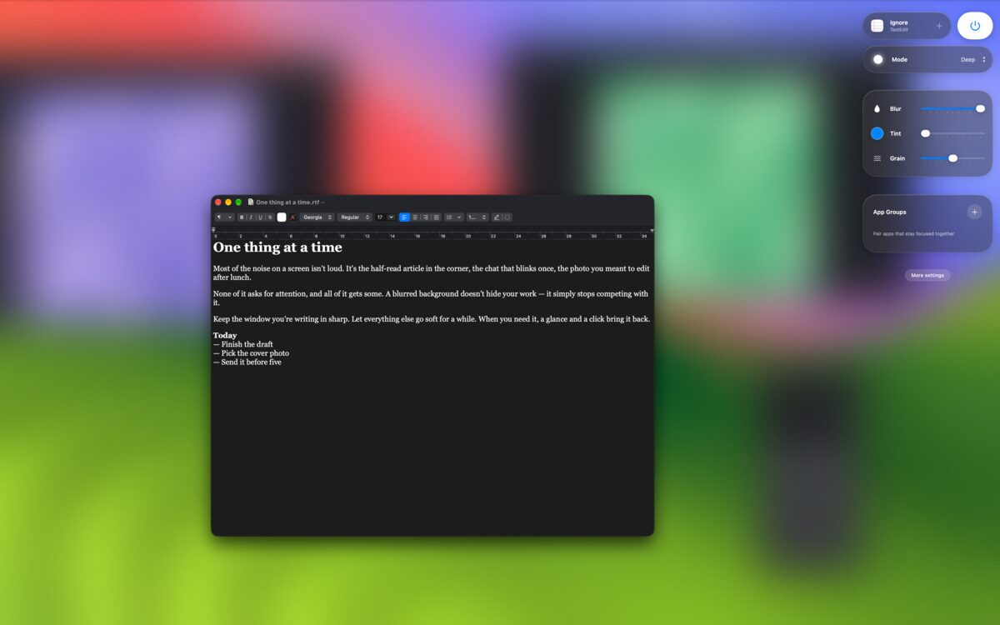

Settings panel

Deep blurs everything behind your window evenly. Ambient keeps the top of the screen clear and lets the blur build towards the middle. Reveal sets how long the veil takes to fade, from 0 to 1.5 s; the reveal effect is a fade or a soft circle that grows from the pointer.